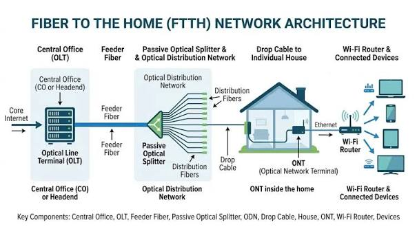

FTTH
FTTH ဆိုတာဘာလဲ
FTTH (Fiber To The Home) ဆိုသည်မှာ Internet သို့မဟုတ် အခြား Communication Service များကို သုံးစွဲသူ၏ အိမ်အတွင်းအထိ Fiber Optic Cable ဖြင့် တိုက်ရိုက်ပို့ဆောင်ပေးသည့် Access Network နည်းပညာတစ်ခုဖြစ်သည်။
FTTH တွင် Customer နေရာအထိ Copper Cable ကို အဓိကအသုံးပြုခြင်းမဟုတ်ဘဲ Optical Fiber ကို အသုံးပြုထားသောကြောင့် Data ကို အလင်းအချက်ပြအဖြစ် အကွာအဝေးရှည်ရှည် ပို့ဆောင်နိုင်သည်။
FTTH Network ကို အများအားဖြင့် ISP ဘက်ရှိ OLT မှစတင်ပြီး Distribution Fiber Network မှတစ်ဆင့် Customer အိမ်ရှိ ONT/ONU အထိ ချိတ်ဆက်ထားသည်။
FTTH Network ဖွဲ့စည်းပုံ
FTTH Network တစ်ခုတွင် အဓိကအားဖြင့် အောက်ပါ Components များ ပါဝင်သည်။
- OLT (Optical Line Terminal) — ISP ဘက်ရှိ Central Office သို့မဟုတ် Headend တွင်ရှိပြီး FTTH Subscriber များထံ Optical Signal ပေးပို့ခြင်းနှင့် လက်ခံခြင်းကို ပြုလုပ်သည်။
- ODN (Optical Distribution Network) — OLT နှင့် Customer နေရာကြားရှိ Passive Fiber Network ဖြစ်သည်။
- Optical Splitter — Optical Signal တစ်ခုကို Customer များစွာထံ ဖြန့်ဝေပေးနိုင်ရန် Signal ကို ခွဲပေးသည်။
- Fiber Distribution Cable — OLT ဘက်မှ Customer ဘက်သို့ Fiber Connection ကို ဖြန့်ဖြူးပေးသည်။
- ONT/ONU — Customer အိမ်တွင် Optical Signal ကို Ethernet စသည့် အသုံးပြုနိုင်သော Interface များအဖြစ် ပြောင်းလဲပေးသည်။

FTTH Network တွင် OLT မှ Customer အိမ်ရှိ ONT/ONU အထိ Fiber Connection ဖြန့်ဝေထားပုံ
FTTH အလုပ်လုပ်ပုံ
FTTH Network တွင် Data သည် ISP Network မှ Customer အိမ်အထိ Optical Fiber လမ်းကြောင်းအတိုင်း သွားလာသည်။
အခြေခံလုပ်ဆောင်ပုံမှာ -
- ISP Network မှ Internet Data ကို OLT သို့ ပေးပို့သည်။
- OLT သည် Data ကို Optical Signal အဖြစ် ပြောင်းလဲပြီး Fiber Network ထဲသို့ ပေးပို့သည်။
- Optical Signal သည် ODN အတွင်းရှိ Fiber Cable များမှတစ်ဆင့် ဖြတ်သန်းသွားသည်။
- Optical Splitter ရှိပါက Signal ကို သတ်မှတ်ထားသော Split Ratio အတိုင်း Customer များစွာထံ ဖြန့်ဝေပေးသည်။
- Customer အိမ်ရှိ ONT/ONU သည် Optical Signal ကို လက်ခံပြီး Ethernet Interface သို့မဟုတ် Wi-Fi Router အသုံးပြုနိုင်သော Network Connection အဖြစ် ပြောင်းလဲပေးသည်။
- Customer Device များသည် ထို Connection မှတစ်ဆင့် Internet ကို အသုံးပြုနိုင်သည်။
OLT နှင့် ONT/ONU
FTTH Network ၏ အစွန်းနှစ်ဖက်တွင် OLT နှင့် ONT/ONU တို့သည် အရေးကြီးသော Network Equipment များဖြစ်သည်။
OLT သည် ISP ဘက်တွင်ရှိပြီး Subscriber များကို Access Network မှတစ်ဆင့် Service ပေးနိုင်ရန် Network ကို ထိန်းချုပ်ပေးသည်။
ONT (Optical Network Terminal) သို့မဟုတ် ONU (Optical Network Unit) သည် Customer ဘက်တွင်ရှိပြီး Optical Fiber မှရရှိသော Signal ကို Customer Network တွင် အသုံးပြုနိုင်သော Interface များအဖြစ် ပြောင်းလဲပေးသည်။
ဥပမာအားဖြင့် ONT တွင် Ethernet Port ပါရှိပါက Ethernet Cable ဖြင့် Wi-Fi Router သို့မဟုတ် Computer ကို ချိတ်ဆက်နိုင်သည်။
Passive Optical Network
FTTH Deployment များတွင် PON (Passive Optical Network) Architecture ကို အများဆုံးတွေ့ရသည်။
PON တွင် OLT နှင့် Customer ONT/ONU များကြား Network လမ်းကြောင်း၌ လျှပ်စစ်အားသုံး Active Equipment များကို Distribution အဆင့်တွင် မလိုအပ်ဘဲ Passive Optical Splitter နှင့် Fiber Cable များကို အသုံးပြုနိုင်သည်။
PON Architecture ၏ အခြေခံလမ်းကြောင်းကို -
OLT → Feeder Fiber → Optical Splitter → Distribution/Drop Fiber → ONT/ONU
ဟု နားလည်နိုင်သည်။
FTTH တွင် Fiber Cable လမ်းကြောင်း
FTTH Network ကို Customer အိမ်အထိ တည်ဆောက်ရာတွင် Fiber Cable လမ်းကြောင်းကို အဆင့်အလိုက် ခွဲခြားနိုင်သည်။
- Feeder Fiber — Central Office သို့မဟုတ် OLT ဘက်မှ Distribution Network အထိ ချိတ်ဆက်ပေးသည်။
- Distribution Fiber — Network အတွင်းရှိ Distribution Point များမှ Customer ဘက်သို့ Fiber ကို ဖြန့်ဝေပေးသည်။
- Drop Fiber — Customer ၏ အိမ် သို့မဟုတ် Premises အထိ နောက်ဆုံးချိတ်ဆက်ပေးသည့် Fiber Cable ဖြစ်သည်။
ထို Fiber လမ်းကြောင်းတစ်လျှောက်တွင် Connector, Splice, Splitter နှင့် Closure များကဲ့သို့သော Network Components များ ပါဝင်နိုင်သည်။
FTTH တွင် သတိပြုရမည့် အချက်များ
FTTH Network ၏ Performance နှင့် Reliability ကို ထိန်းသိမ်းရန် Fiber Link တစ်ခုလုံး၏ Optical Condition ကို ဂရုစိုက်ရသည်။
အထူးသဖြင့် -
- Fiber Cable ကို သတ်မှတ်ထားသော Bend Radius ထက် ပိုမိုကွေးခြင်း မပြုလုပ်သင့်ပါ။
- Connector များ၏ End Face ကို သန့်ရှင်းစွာ ထိန်းသိမ်းရမည်။
- Splicing အရည်အသွေးကောင်းမွန်ရန် လိုအပ်သည်။
- Fiber Link တစ်လျှောက်ရှိ Optical Loss ကို သတ်မှတ်ထားသော Budget အတွင်း ရှိမရှိ စစ်ဆေးရမည်။
- Fault ဖြစ်ပေါ်ပါက Optical Power Meter သို့မဟုတ် OTDR ကဲ့သို့သော Testing Equipment များကို အသုံးပြု၍ Fiber Link ကို စစ်ဆေးနိုင်သည်။
FTTH ၏ အားသာချက်များ
FTTH သည် Customer Premises အထိ Fiber Optic ကို အသုံးပြုထားသောကြောင့် Broadband Access Network အတွက် အားသာချက်များစွာ ရှိသည်။
- High Bandwidth ကို ထောက်ပံ့နိုင်သည်။
- အကွာအဝေးရှည်သော Fiber Link များအတွက် သင့်လျော်သည်။
- Copper Cable နှင့် နှိုင်းယှဉ်ပါက Electromagnetic Interference ၏ သက်ရောက်မှုကို ခံရမှုနည်းသည်။
- Network Capacity ကို လိုအပ်ချက်အရ တိုးမြှင့်နိုင်ရန် Fiber Infrastructure ကို အသုံးချနိုင်သည်။
- Internet, Voice နှင့် Video ကဲ့သို့သော Service များကို တစ်ခုတည်းသော Access Network မှတစ်ဆင့် ပေးနိုင်သည်။
FTTH ကို ဘယ်နေရာတွေမှာ အသုံးပြုသလဲ
FTTH ကို Residential Internet Service အတွက် အဓိကအသုံးပြုသော်လည်း အခြား Customer Premises များတွင်လည်း အသုံးပြုနိုင်သည်။
ဥပမာ -
- အိမ်ရာများနှင့် Residential Buildings
- Apartment နှင့် Condominium များ
- Small Office နှင့် Home Office
- အခြား Broadband Customer Premises များ
FTTH Network တည်ဆောက်ပုံသည် Service Provider ၏ Network Architecture, Subscriber Density, Split Ratio, Fiber Route နှင့် သတ်မှတ်ထားသော Optical Budget တို့အပေါ် မူတည်၍ ကွဲပြားနိုင်သည်။
အနှစ်ချုပ်
FTTH (Fiber To The Home) သည် Fiber Optic ကို Customer ၏ အိမ်အတွင်းအထိ တိုက်ရိုက်အသုံးပြုသည့် Broadband Access Network နည်းပညာဖြစ်သည်။
၎င်း၏ အခြေခံ Network လမ်းကြောင်းမှာ OLT → ODN → Optical Splitter → Fiber Distribution → ONT/ONU ဟူ၍ နားလည်နိုင်သည်။ OLT သည် ISP ဘက်မှ Network Access ကို ပံ့ပိုးပေးပြီး ONT/ONU သည် Customer ဘက်တွင် Optical Signal ကို အသုံးပြုနိုင်သော Network Connection အဖြစ် ပြောင်းလဲပေးသည်။
FTTH ၏ အဓိကအခြေခံကို နားလည်ရန် OLT, ODN, Optical Splitter, Fiber Cable နှင့် ONT/ONU တို့၏ တာဝန်များနှင့် ၎င်းတို့ကြားရှိ Fiber Connection လမ်းကြောင်းကို နားလည်ထားရန် အရေးကြီးသည်။